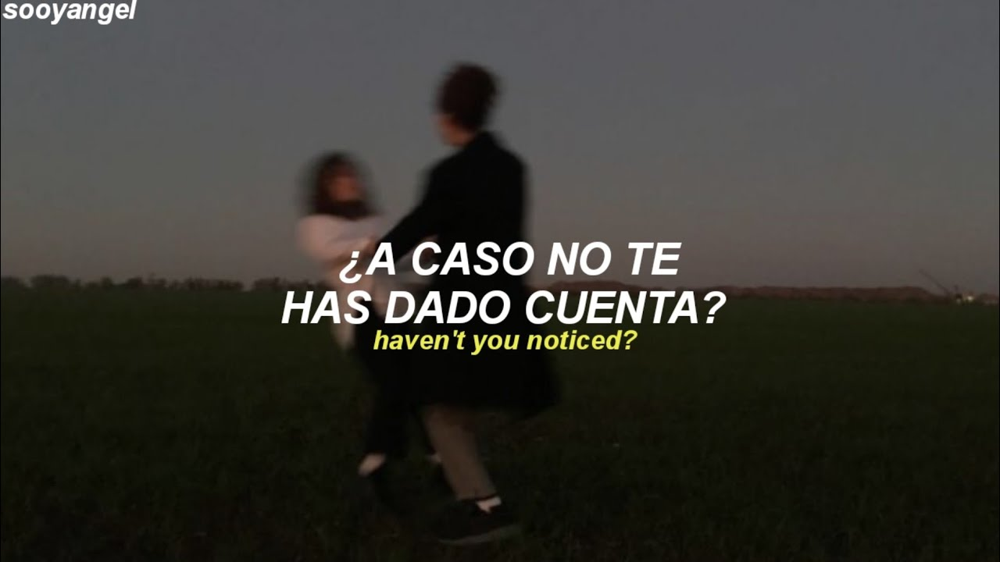
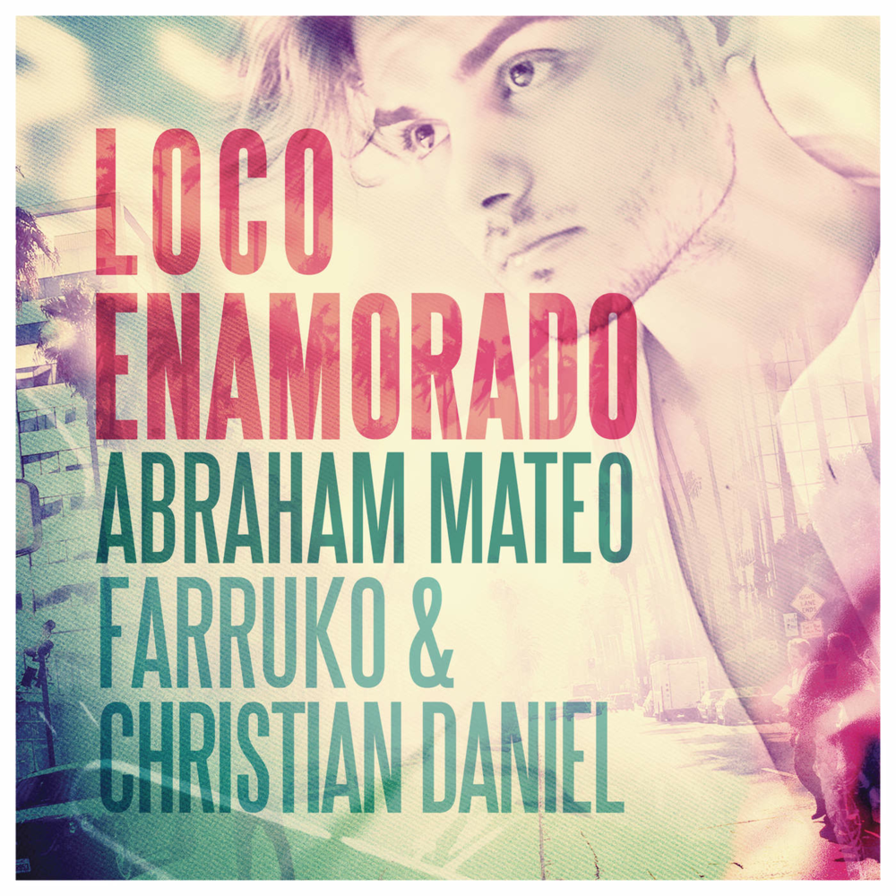
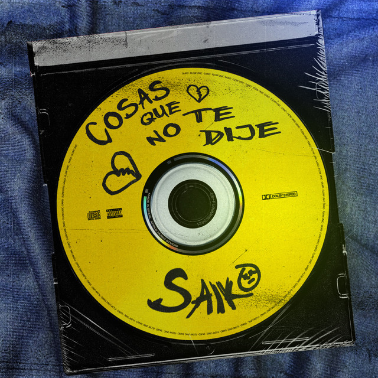

Si No Estás – Iñigo Quintero
Quiero ver tu otra mitad,
alejarme de esta ciudad,
y contagiarme de tu forma de pensar.
Miro al cielo al recordar,
me doy cuenta otra vez más
que no hay momento que pase sin dejarte de pensar.

¿A caso no te has dado cuenta?
¿A caso no te has dado cuenta?
De lo bien que me complementas
Si quieres te invito un helado y te explico lo chido que haces que me sienta
Contigo estoy high sin avión
Me haces perder la razón
Estoy todo el día pensándote con mariposas en el corazón
Y tú (y tú-uh)
Me pones todo de cabeza
Tú (y tú-uh)
Eras esa última pieza
Tú (tú-uh)
Eres tan diferente
Y no hay nadie que me vuele así la mente como lo haces tú
.webp)
Mi niña
Yo quiero viajar el mundo contigo de compañía (tú sabe' ya)
Ninguna mujer me comprendía
Cierra los ojos y dime en qué lugar es que estaría (ajá)
Que voy a pedir una estadía
A ella le cogen cosa' porque está conmigo
El que te falte el respeto se convierte en mi enemigo
Hay muchas envidiosa', dicen que es prohibido
Siempre está en mi mente, yo nunca la olvido
Porque es mi niña (oh-oh-oh-oh)
.webp)
Rara vez – Milo J
Sos lo que me da paz
Lo que andaba buscando
Y esa felicidad
Que hace que ande sonriendo
Quiero verte feliz
Mejor si es al lado de mí
Love incondicional
Como perro a su amo, te sigo amando
Dama con fama 'e cama alta gama y corazón partido
Fono lleno 'e fanes que llaman y solo atiende el mío
Vamo a vernos con frío o calor, picnic, Netflix, voy en tren
En ten o fifteen estoy, y siendo honesto, baby
.webp)
Pareja del año
Qué tan loco sería si yo fuera
El dueño de tu corazón por solo un día
Si nos gana la alegría, yo por fin te besaría
¿Qué pasaría?
Si me dieran solo veinticuatro horas, yo las aprovecho
Juro que yo voy a hacerte cosas que nunca te han hecho
Ya yo me cansé de ser amigos con derecho'
Yo tal vez no te merezco
Pero no hay ni que decirlo
Si nos juntamos, seríamos la pareja del siglo
.webp)
¿A dónde vámos? – Morat
Que siendo un extraño, te dije: "te amo"
Te he estado buscando por más de mil años"
Y tú respondiste: "¿a dónde vamos?"
Contra las apuestas, aquí nos quedamos
Viviendo de fiesta después del verano en el que respondiste
"¿A dónde vamos?"
Y aunque la historia no estaba prevista
Somos la prueba de que existe amor a primera vista
No dejo de mirarte ni un segundo
Cuando tú estás desaparece el mundo
Mejores noches yo no creo que existan.
Cuando te vi – Trueno
Aunque todavía no soy rico, te puedo dar amor como de chico
Cosquillas en la panza, como antes del primer pico
O poder agarrarte de la mano una tarde de verano
Momentos que se vuelven infinitos
Y por favor, no le pongas precio ni valor a mi honor
Que sin idealizaciones, no hay dolor
Y eso es bueno para mí, que no ando en busca del amor
Ando en busca de una turra y si es de zona sur, mejor
¿Vos querías calle? Traje poesía callejera
Poca plata, muchos sueños, voy a darte lo que quiera
Estoy bajando pa tu barrio, yendo por la carretera
Esta cara llena un estadio y yo pienso que es Bombonera
Y si me espera, yo voy y la busco de cualquier manera
Le dije que estoy llegando, en realidad ya estoy afuera
Y espero que baje rápido, el tiempo me desespera
Guacho verdadero pa la mamichula verdadera, TR1
.webp)
Todo de Ti – Rauw Alejandro
One, two
One, two, three
El viento soba tu cabello
Uh, uh, uh, uh, uh
Me matan esos ojos bellos
Uh, uh, uh, uh, uh
Me gusta tu olor, de tu piel, el color
Y como me haces sentir
Me gusta tu boquita, ese labial rosita
Y cómo me besas a mí
Contigo quiero despertar
Hacerlo después de fumar (ey)
Ya no tengo na' que buscar
Algo fuera de aquí
Tú combinas con el mar
Ese bikini se ve fenomenal
No hay gravedad que me pueda elevar
Me pones mal a mí
Aceleraste mis latidos
Es que me gusta todo de ti
De to'as tus partes, ¿cuál decido?
Es que me gusta todo de ti
Es que me gusta todo de ti
Es que me gusta todo de ti
Quinta Avenida, no va pa'l mall
Ella sabe que le llego a todo en un call
En la Raptor me gusta ponerla en Ford
El jogger large, la camisa small
Como la dieta keto
Por ti me controlo y me quedo quieto
Aunque quiero comerte to' eso completo
De ese culo me volví un teco, eh
Micro dosis, rola, oxy
Besando esos labios glossy
Ya yo le di en to'as las posi'
Shampoo de coco
Chanel su wallet
Me vuelve loco desde el casco
Hasta los pedales
Contigo quiero despertar
Hacerlo después de fumar
Ya no tengo na' que buscar
Algo fuera de aquí
Tú combinas con el mar
Ese bikini se ve fenomenal
No hay gravedad que me pueda elevar
Me pones mal a mí
Aceleraste mis latidos
Es que me gusta todo de ti
De to'as tus partes, ¿cuál decido?
Es que me gusta todo de ti
Todo de ti, todo de ti
Es que me gusta todo de ti
Todo de ti, todo de ti
Es que me gusta todo de ti
Contigo quiero despertar
Hacerlo después de fumar
Ya no tengo na' que buscar
Algo fuera de aquí
Tú combinas con el mar
Ese bikini se ve fenomenal
No hay gravedad que me pueda elevar
Me pones mal a mí

Loco Enamorado – Abraham Mateo
Te confieso llevo un rato idealizándote
Toda una vida yo buscándote
No sé que hacer, te ves muy bien
Me acercaré, eh-eh
Te confieso que lo mío no es realmente hablar
Soy algo tímido, como verás
Pero, esta vez
Me atreveré, te lo diré, eh-eh
Ya me tienes como un loco enamorado
Baby, la verdad es que tú me gustas demasiado
Ven que lo demás yo te lo digo bailando
Pégate, y-eh, y-eh (Wuh)
Y es que ahora ya no sales de mi mente
Ando por aquí pensando en ti frecuentemente
¿Será que lo que siento, tú también por mí lo sientes?
Pégate, eh
Sabes que soy yo, uoh
Quien te da calor, uoh (Oh)
Yo sé que conmigo tú la pasarás mejor (Yo)
Sabes que soy yo, yo
Quien te hace perder el control-trol
Quiero bailar contigo hasta la última canción, uoh-uoh
Si tú eres para mí, también soy para ti
Por pasar otra noche contigo hago lo que sea, lo que sea
Si tú eres para mí, también soy para ti
Si te dejas llevar, yo te doy todo lo que quieras, eh
No sé, bebé, qué es lo que tú tienes
Que cuando tú me bailas me pones bien nervioso
A mí, cuando te mueves así
De manera provocativa, eso me motiva
Bailando un reguetón de los de antes que te activa
De esos que se bailan lento, bien pega'o
(Díselo, Farru')
Pero me tienes como un loco enamorado (Oh-oh-oh)
Y la verdad es que tú me gustas demasiado (Oh-oh-oh)
Ven que lo demás yo te lo digo bailando
Pégate, y-eh, y-eh
Es que ahora ya no sales de mi mente
Ando por aquí pensando en ti frecuentemente
¿Será que lo que siento tú también por mí lo sientes?
Pégate, eh (Ahora, mami)
Sabes que soy yo, uoh
Quien te da calor uoh
Yo sé que conmigo tú la pasarás mejor
Sabes que soy yo, yo
Quien te hace perder el control-trol
Quiero bailar contigo hasta la última canción, uoh-uoh
Si tú eres para mí, también soy para ti
Por pasar otra noche contigo hago lo que sea, lo que sea
Si tú eres para mí y yo soy para ti
Por pasar otra noche contigo hago lo que sea, yo hago lo que sea
Tú sabes que me gustas, sabes que me encantas
Báilalo lento, que eso a mí me mata
Dale, mamacita, que no tengo prisa
Hagamos de esta noche una noche infinita
No digas que te vas, busquemos un lugar
Que no haya nadie, solo haya oscuridad
Y bésame lento
Paremos el tiempo (¡Oye!)
Tú me tienes como un loco enamorado
Baby, la verdad que tú me gustas demasiado
Ven que lo demás yo te lo digo bailando
Pégate, y-eh, y-eh (Y-eh)
Es que ahora ya no sales de mi mente (Oh-oh-oh)
Ando por aquí pensando en ti frecuentemente (Oh-oh-oh)
¿Será que lo que siento por ti tú también lo sientes?
Pégate, eh
Sabes que soy yo, uoh
Quien te da calor, uoh
Yo sé que conmigo tú la pasarás mejor
Sabes que soy yo, yo
Quien te hace perder el control-trol
Quiero bailar contigo hasta la última canción, uoh-uoh
(Abraham Mateo)
Tú me tienes como loco enamorado (Farru)
Enamorado de ti (Abraham Mateo), ay, solo de ti
Yo creo que quedó claro que (Christian Daniel)
Eres para mí, también soy para ti (Worldwide)
Hago lo que sea, lo que sea por ti (Gaby Music)
.png)
Bailando – Enrique Iglesias
Ja, ja, ja, ja
Enrique Iglesias
One love, one love
Gente de Zona
Descemer
Yo te miro y se me corta la respiración
Cuando tú me miras, se me sube el corazón
(Me palpita lento el corazón)
Y en un silencio tu mirada dice mil palabras (uh)
La noche en la que te suplico que no salga el sol
Bailando (bailando)
Bailando (bailando)
Tu cuerpo y el mío llenando el vacío
Subiendo y bajando (subiendo y bajando)
Bailando (bailando)
Bailando (bailando)
Ese fuego por dentro me va enloqueciendo
Me va saturando
Con tu física y tu química, también tu anatomía
La cerveza y el tequila, y tu boca con la mía
Ya no puedo más (ya no puedo más)
Ya no puedo más (ya no puedo más)
Con esta melodía, tu color, tu fantasía
Con tu filosofía mi cabeza está vacía
Y ya no puedo más (ya no puedo más)
Ya no puedo más (ya no puedo más)
Yo quiero estar contigo
Vivir contigo, bailar contigo
Tener contigo una noche loca (una noche loca)
Ay, besar tu boca (y besar tu boca)
Yo quiero estar contigo
Vivir contigo, bailar contigo
Tener contigo una noche loca
Con tremenda nota
Oh-oh-oh-oh
Oh-oh-oh-oh
Oh-oh-oh-oh, oh
Oh-oh-oh-oh
Tú me miras y me llevas a otra dimensión
(Estoy en otra dimensión)
Tus latidos aceleran a mi corazón
(Tus latidos aceleran a mi corazón)
Qué ironía del destino no poder tocarte (¡wuh!)
Abrazarte y sentir la magia de tu olor
Bailando (bailando)
Bailando (bailando)
Tu cuerpo y el mío llenando el vacío
Subiendo y bajando (subiendo y bajando)
Bailando (bailando)
Bailando (bailando)
Ese fuego por dentro me va enloqueciendo
Me va saturando
Con tu física y tu química, también tu anatomía
La cerveza y el tequila y tu boca con la mía
Ya no puedo más (ya no puedo más)
Ya no puedo más (ya no puedo más)
Con esta melodía, tu color, tu fantasía
Con tu filosofía mi cabeza está vacía
Y ya no puedo más (ya no puedo más)
Ya no puedo más (ya no puedo más)
Yo quiero estar contigo
Vivir contigo, bailar contigo
Tener contigo una noche loca (una noche loca)
Ay, besar tu boca (y besar tu boca)
Yo quiero estar contigo
Vivir contigo, bailar contigo
Tener contigo una noche loca
Con tremenda nota
Oh-oh-oh-oh
Oh-oh-oh-oh
Oh-oh-oh-oh, oh
Oh-oh-oh-oh
Oh-oh-oh-oh
Oh-oh-oh-oh
Oh-oh-oh-oh, oh
Oh-oh-oh-oh
Oh-oh-oh-oh (bailando, amor)
Oh-oh-oh-oh (bailando, amor)
Oh-oh-oh-oh, oh
(Es que se me va el dolor) oh-oh-oh-oh
La Plena
O-O-Ovy On The Drums
Eres la niña de mis ojos tú
Eres todo lo que quiero yo
¿Una cerveza pa calmar la sed?, no
Mejor ser besado por su boquita, amor
Las tentaciones así como tú
Merecen pecados como yo
Ay, si tú quieres, solo da la lu' (yeh-yeh)
Tú sabes que no vo'a a decir que no
Ay, tienes la magia, tú sí tiene' una vainita
Que a mí me encanta, me enloquece (alright)
Dormir contigo fue amor a primera vista
Cuando bailabas así
Por el cuellito, besito y lengüita
Sé que te encanta, te enloquece
Sé que te encanta, te enloquece
Y a veces
Uh-uh-uh-uh, uh-uh, uh-uh (sé que te encanta, te enloquece)
Uh-uh-uh-uh, uh-uh, uh-uh
¡La plena!
Uh-uh-uh-uh, uh-uh, uh-uh
Uh-uh-uh-uh (óyelo), uh-uh, uh-uh
Oye, lo que pasa es que desde que vi tu cara
Me enamoro de ti toda, es que tú tiene' un no sé qué
Siento que te pasa lo mismo cuando te miro
¿Qué dices si nos parchamos a ver el amanecer? (¡Prr, uh!)
Quiero hacerte todo, quiero que tú seas mi toda
Le digo: "Sobelove", y luego viene y me lo soba (¡uah!)
Vamo a vernos luego, si no te gusta el infierno
¿Pa qué vienes al diablo y lo emboba'?
Ella, parcerita paisa; y yo, costeño coleto
En una baldosa la aprieto
Pa hablarte claro, cero visaje
Se sabe que tú eres puro veneno
Ay, tienes la magia, tú sí tiene' una vainita
Que a mí me encanta, me enloquece
Dormir contigo fue amor a primera vista
Cuando bailabas así
Por el cuellito, besito y lengüita
Sé que te encanta, te enloquece
Sé que te encanta, te enloquece
Y a veces
Uh-uh-uh-uh, uh-uh, uh-uh (sé que te encanta, te enloquece)
Uh-uh-uh-uh, uh-uh, uh-uh (óyelo)
¡La plena!
Uh-uh-uh-uh, uh-uh, uh-uh (sé que te encanta, te enloquece)
Uh-uh-uh-uh, uh-uh, uh-uh
Beéle (¡wuh-wuh-wuh-wuh-wuh-wuh!)
Ovy On The Rasta Drums (lo tomo)
W Sound
Aye
Alright
.webp)
Tacones Rojos – Sebastián Yatra
Es una voz
Hay un rayo de luz
Que entró por mi ventana
Y me ha devuelto las ganas
Me quita el dolor
Tu amor es uno de esos
Que te cambian con un beso
Y te pone a volar
Mi pedazo de sol
La niña de mis ojos
Tenía una colección
De corazones rotos
Mi pedazo de sol
La niña de mis ojos
La que baila reguetón
Con tacones rojos
Y me pone a volar
La que me hace llorar
La que me hace sufrir
Pero no paro de amar
Porque me hizo sentir
Que gané la lotería
Antes de ella no sabía que alguien podía amarme así
El día que te conocí, lo sentí, me dejé llevar
Me morí y reviví en el mismo bar
Solo entraba para emborracharme, ey
No esperaba enamorarme de ti
Ni tú de mí, pasó así
Y así empezó nuestra historia, no falla mi memoria
Yo te dije: "baby, ¿qué haces tú por aquí?"
Así empezó nuestra historia y te llevé pa Colombia
Mi pedazo de sol
La niña de mis ojos
Tiene una colección
De corazones rotos
Mi pedazo de sol
La niña de mis ojos
La que baila reguetón
Con tacones rojos
Y me pone a volar
La que me hace llorar
La que me hace sufrir
Pero no paro de amar
Porque me hizo sentir
Que gané la lotería
Antes de ella no sabía que alguien podía amarme así, yeah
Cuidadoso entra en tu ventana (yeah, yeah)
Cuidadoso empezó a hablar (yeah)
Mi pedazo de sol
La niña de mis ojos
Tenía una colección
De corazones rotos
Mi pedazo de sol
La niña de mis ojos
La que baila reguetón
Con tacones rojos
Y me pone a volar
La que me hace llorar
La que me hace sufrir
Pero no paro de amar
Porque me hizo sentir
Que gané la lotería
Antes de ella no sabía que alguien podía amarme así

Cosas Que No Te Dije
Yeah, yeah
Oye, dime, Saiko
Dime si te gustaría
Vamos a escribir nuestras iniciales juntas, eh
La verdad que tú me gusta'
En invierno y en verano y
Si te hago la pregunta
El horóscopo dice que somos compatible'
Y eso que yo no creía
Pero habrá que hacerle caso
Y yo te aviso, como subas otra foto en la playa, te caso
Mami, dime si te gusto solo por si acaso
Que de tanto perder, le perdí el miedo al fracaso y (je)
Estoy pensando si decirte que me gustas tanto
Que me gustas tanto
Que yo te quiero dormida en la cama con mi hoodie
Dime si te gustaría, quiero ser todos tus hobbie', mami (mami)
Solo una cosa te pediría, que si te doy mi corazón
Me lo cuides todos los día'
Necesito algo que no sea temporal
Alguien para presumir
Cuando te lleve a comer con mi familia en Navidad (je)
No sé si me entiende'
Que yo sé que tienes más pretendiente'
Pero no tienen nada que ofrecerte
Quizá alguno te compre ropa de marca
Pero tú prefieres ponerte la mía, por suerte
Y cada vez que coinciden las mirada'
Pienso en si tú sientes lo mismo, pero tampoco me dices nada
Y cuando te va'
Siempre me giro, por si esta vez me decido
Que yo te quiero dormida en la cama con mi hoodie
Dime si te gustaría, quiero ser todos tus hobbie', mami (mami)
Solo una cosa te pediría, que si te doy mi corazón
Me lo cuides todos los día'
Solo imagina
Mami, dime si te gusto para ser tú y yo y ya
Tú y yo y nadie más
Hay cosas que no te dije aquella noche, pero creo que
En mi tablero falta reina, no tengo castillo
Pero puedes quedarte en mi casa cuando quiera'
Solo júrame que tú no serás pasajera
Y antes de que te fueras
Te dije: "tú solo confía"
Yo también tengo miedo
De estrellarme si acelero
Pero contigo no freno
Que yo te quiero dormida en la cama con mi hoodie
Dime si te gustaría, quiero ser todos tus hobbie', mami (mami)
Solo una cosa te pediría, que si te doy mi corazón
Me lo cuides todos los día'
Bebé
Es que las palabras no vienen easy pa' ti
Quiero saber si tú piensa' en mí
¿Cómo te hago ver que esto no es easy?
Mami, mami
.jpeg)
Indeciso – Reik, J Balvin & Lalo Ebratt
J Balvin, man
Lalo Ebratt (Su movimiento me tiene indeciso)
Reik
Lego
Siempre que ella baila así
A mí me daña la cabeza
El día que la conocí
Tomaba tequila y cerveza
Y ahora yo me la pasó buscando
Una razón pa' verte bailando
Me robó el corazón sin permiso
Su movimiento me tiene indeciso
Siempre que ella baila así
A mí me daña la cabeza
El día que la conocí
Tomaba tequila y cerveza
Y ahora yo me la pasó buscando
Una razón pa' verte bailando
Me robó el corazón sin permiso
Su movimiento me tiene indeciso
Por esas caderas yo estoy indeciso
Su movimiento me tiene indeciso
De todita las relaciones
Contigo nunca hago excepciones
Pero hay alguien que está en esta fiesta
¿Cuánto me cuesta verla otra vez?
Tú eres mi Dua Lipa
Suelta, mami tú sabes
Que estás bien rica
Dándole hasta abajo
Ella no se quita
Perfume de Chanel
Ella rompe con su Flex
Y le da
A ella le gusta que la miren
Parece modelo de cine
Ella lo sabe y yo me le acerqué
Porque sabe que estamos PPP
A ella le gusta que la miren
Parece modelo de cine
Ella lo sabe y yo me le acerqué
Porque sabe que estamos PPP
Yeh yeh yeh
Siempre que ella baila así
A mí me daña la cabeza
El día que la conocí
Tomaba tequila y cerveza
Y ahora yo me la pasó buscando
Una razón pa' verte bailando
Me robó el corazón sin permiso
Su movimiento me tiene indeciso
Por esas caderas yo estoy indeciso
Su movimiento me tiene indeciso
Por esas caderas yo estoy indeciso
Su movimiento me tiene indeciso
Esa mirada me cautiva
Motiva, activa, acida que hace mal
Manda razones con tu amiga
Ya vi tu llamada perdida
Victoria, ella no es un secreto
Que tú a mí me gustas
Que yo te comprendo
Dolce tu gafas, Gabbana so sexy
Chanel tu perfume (Tú siempre estás trending)
Sofía, tú no le digas a Lucia
Que la otra noche yo estuve viendo a María
No confía ni en su mejor amiga
Nadie me baila como ella me bailaría
Siempre que ella baila así
A mí me daña la cabeza
El día que la conocí
Tomaba tequila y cerveza
Y ahora yo me la pasó buscando
Una razón pa' verte bailando
Me robó el corazón sin permiso
Su movimiento me tiene indeciso
Nunca bajamos los niveles
Por esas caderas yo estoy indeciso (Mango)
(Trapical Minds) Su movimiento me tiene indeciso
Dos mil treinta y pico
J Balvin, man
L-A-L-O Lalo Ebratt
Vomitando flow now (Joex)
Su movimiento me tiene indeciso
El negocio socio, ah